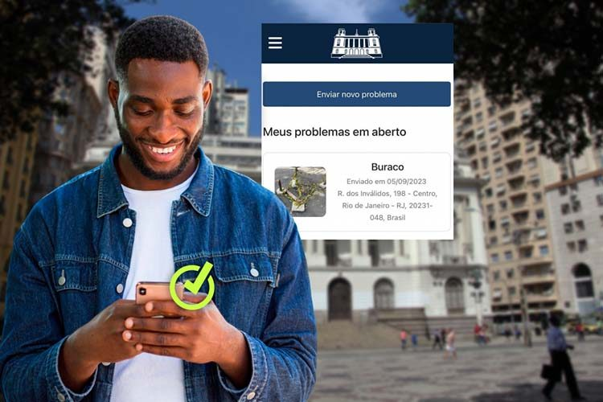

Sobre o Bairro em Dia
O Bairro em Dia é uma plataforma digital que conecta cidadãos e serviços públicos. Moradores registram problemas urbanos com foto e endereço, recebem um protocolo e acompanham cada etapa até a resolução.

A importância da participação popular
A transformação da cidade começa quando cada cidadão participa.
Quem mora no bairro enxerga primeiro o buraco, a lâmpada apagada e o lixo acumulado. Quando esse olhar vira registro, a gestão pública passa a ter dados concretos para priorizar.
O problema que queremos resolver
Muitos problemas urbanos ficam sem solução por falta de um canal simples, rastreável e transparente. O morador reclama, mas não sabe se foi ouvido, e o poder público não tem um retrato organizado das demandas.
Objetivos da plataforma
- Facilitar o registro de problemas urbanos pelo celular.
- Gerar um protocolo único para cada ocorrência.
- Dar transparência ao andamento, com histórico e linha do tempo.
- Oferecer indicadores para apoiar decisões da gestão.
Como utilizar o sistema
- Acesse Registrar ocorrência e preencha o formulário.
- Guarde o protocolo exibido na confirmação.
- Consulte o andamento em Acompanhar.
- Veja todas as demandas do bairro em Ocorrências.
Benefícios da tecnologia para a gestão urbana
Dados em tempo real
Banco de dados na nuvem mostra o cenário atual das demandas.
Priorização
Indicadores por categoria e situação mostram onde agir primeiro.
Transparência
Cada mudança de situação fica registrada no histórico.
Acesso para todos
Site responsivo que funciona em celulares, tablets e computadores.